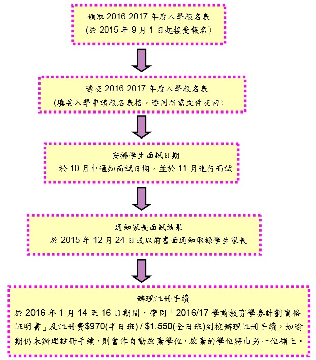

| 下載入學報名表格 |
2016-2017年度入學申請 幼稚園部之入學年齡：2歲8個月
本校2016-2017年度收生於2015年9月1日起接受報名。報名表可於本校網頁或親臨本園索取。請填妥表格後交回本園。
(一)遞交表格須知
1. 入學申請表可於2015年9月1日起遞交，遞交時需繳交40元報名費。
2.遞交申請表必須附上所需文件，否則本校未能替家長辦理報名手續。
l 出生證明文件副本
l 防疫注射記錄表副本（包括底面）
l 相片兩張
l 回郵信封三個-（貼上$1.7郵票)
(二)會見形式及安排
1. 家長須陪同幼兒參與會見。
2. 如面試當天缺席（不論病假或事假），將不獲再次安排面試，所繳之報名費亦一概不得退還。
3. 由於面試人數眾多，恕本校未能更改任何已獲編排之面試時間。
(三)取錄準則
申請入讀之幼兒，如屬以下情況，將獲優先考慮：
ö現就讀本校學前班學生 (四)入學申請手續及過程：  備註：1. 如在「註冊日」後仍有學藉，歡迎家長報名申請入學，並安排面試。
2015-2016年度收費一覽表(供家長作參考之用)
備註：
本園已參加學前教育學券計劃，並可另申請學費減免及設有助學金。
本園可安排媬姆車接送服務，另行收費。
未經許可 切勿轉載 |
||||||||||||||||